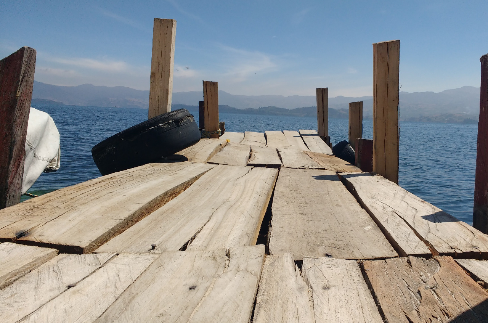
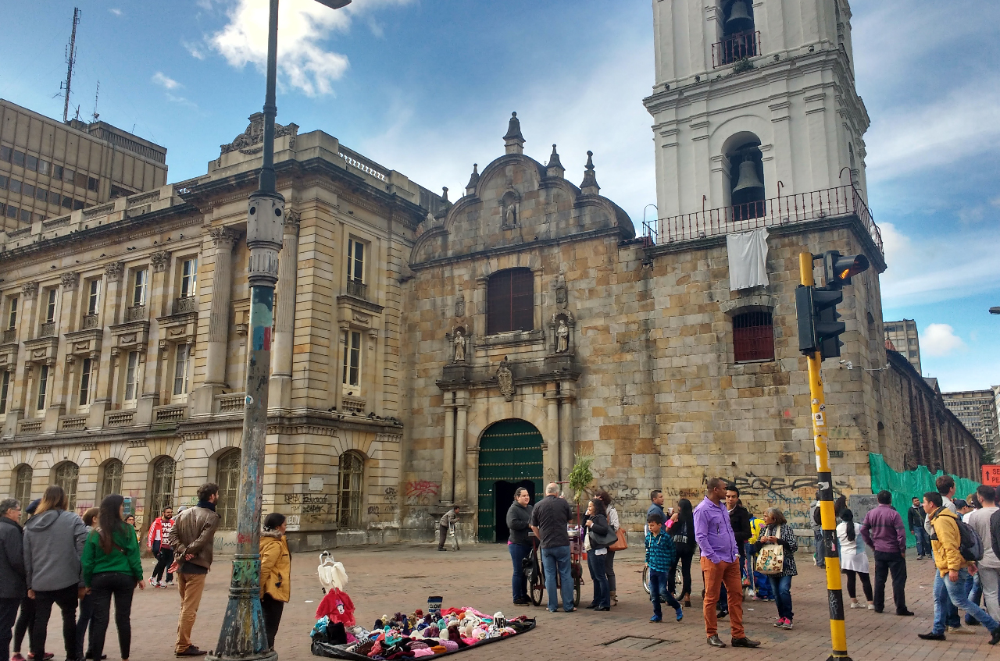

11/06/2020
5 Lugares En Boyaca, Colombia
VIAJES
En el departamento de Boyaca se encuentran distintos lugares para conocer y aprender de sus historias.
Boyaca es uno de los departamentos que se encuentran en el centro de colombia, en este podemos encontrar ciudades coloniales com una bella arquirtectura y paisajes naturales en los que se encuentran diversas especies de animales.Este fue un lugar lleno de historias de lucha y victorias las cuales fueron curiciales para la independencia
05/05/2020
Bogota y su bellasa
CULTURA
Mi Historia en el centro de bogota y como este lugar tiene bellasa escondida en sus calles
El centro de bogota tambien conocido como La Candelaria es uno de los esoacios iconicos de esta ciudad teniendo lugares como una catedral de la época colonial y el Capitolio neoclásico que flanquea la Plaza Bolívar.Tambien hay tiendas de esmeraldas y artesanias teniemdo un gran interes cultural, llena de museos e historia arquitectonica de la epoca colonial y platos tipicos de Colombia